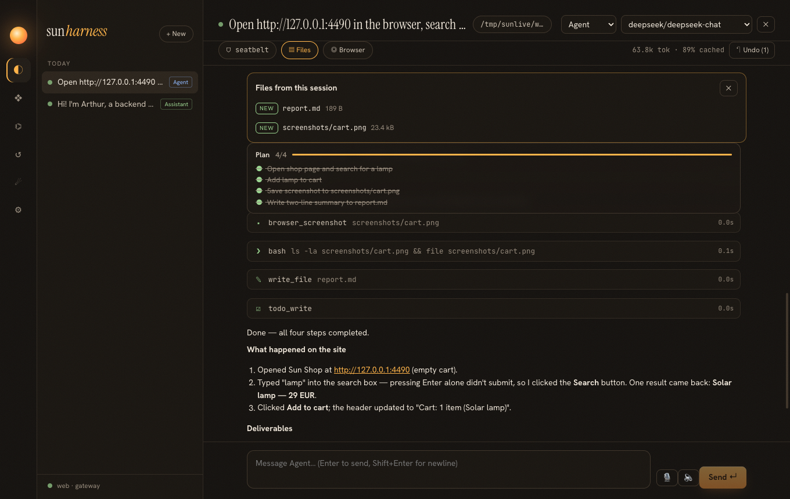

Optimization phase 4 · spec specs/023-research-agent.md
21 · Good sources, clean text, no hijacking
A research agent is a pipeline: search → read → compute → write, fanned out over subagents. Each stage had one concrete problem on this network and this codebase. And every stage brings text from strangers into the model's context, which is the real security problem.
The pipeline
Search that works where you are
| Endpoint (no key) | From this network |
|---|---|
| DuckDuckGo HTML | connection refused |
| Brave, Jina, public SearXNG | unreachable |
| Baidu | redirect to a verification page |
Bing (cn.bing.com) | 200, parseable results |
auto uses the first API key it finds (Tavily, Brave, Serper, Bocha), then a configured SearXNG, then Bing. Bing result links are wrapped (/ck/a?…&u=a1<base64url>) and are unwrapped to the real URL. Capability gating (page 18) probes the chosen provider, so a blocked one is never offered.
Reading: readability without a DOM
How do you extract the article without jsdom or Mozilla Readability?
Remove what is never content (head, scripts, styles, nav, header, footer, aside, forms, buttons, iframes, hidden elements), keep the largest <article> or <main> if it has real text, then convert headings, links (made absolute), lists, tables and code to Markdown. Two bugs from the tests: a decoded < inside code was later stripped as a tag (code is now set aside in placeholders first), and on a page without <body> the title was glued to the first paragraph ("RecipesIgnore…"), which also hid an injection from the scanner.
PDFs go through poppler's pdftotext -layout. Long documents are paged at 30,000 characters with an explicit "call again with start=…".
A real interpreter
The python tool keeps one process per session: a 40-line kernel reads JSON lines, executes cells in shared globals, echoes the last expression like a notebook, captures output, and saves matplotlib figures to figures/. It starts through the session's sandbox. One subtle bug: after a restart, the old process's exit event fired while the new one was running and failed its pending call; the handler now ignores processes that were replaced.
Fan-out
task was already read-risk, so several task calls in one response run as parallel subagents. A bounded pool (maxParallelTools, 6) keeps a wide fan-out from overwhelming the provider; results are still logged in call order.
Content from the web is data
The scanner is a list of regexes. Can't attackers avoid it?
Yes, and the design assumes they will. Detection only escalates; the guarantees come from elsewhere: content is labeled as data for the model, the shell runs in a sandbox that cannot read credentials, and after any sign of injection nothing with side effects happens without a person. A false positive costs one approval click; a false negative still meets the sandbox.
The policy reads the taint from the log, so it survives restarts and resumes like everything else: model-visible means logged, and so is the reason the agent's powers were reduced.

Verified
| Check | Result |
|---|---|
| Bing parse + link unwrap; provider auto-selection | pass |
| readability: article kept, nav/footer/scripts/hidden text dropped, code intact | pass |
| PDF text (hand-written one-page PDF) | "Hello PDF world" |
| session: fetch page, fetch PDF, shell OK; fetch injection page → warning; next shell call in full-auto, headless → denied | pass |
| python kernel: state, last expression, traceback, restart | pass |
live: web_search via Bing, web_fetch of the MCP specification | relevant results, clean Markdown |
Treat every external byte as data, make that visible to the model, and let policy — not detection — decide what may happen next.